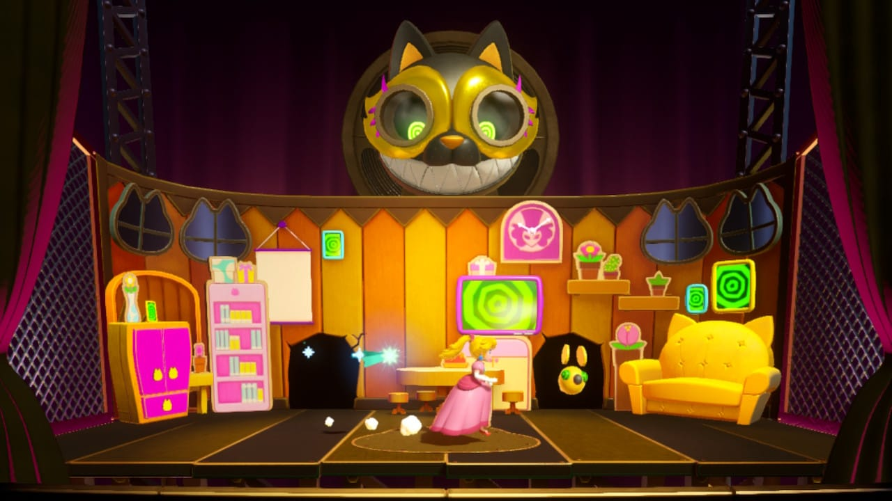
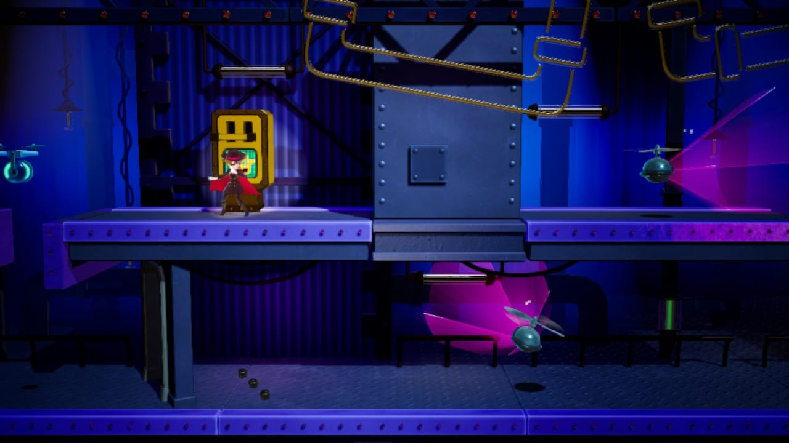
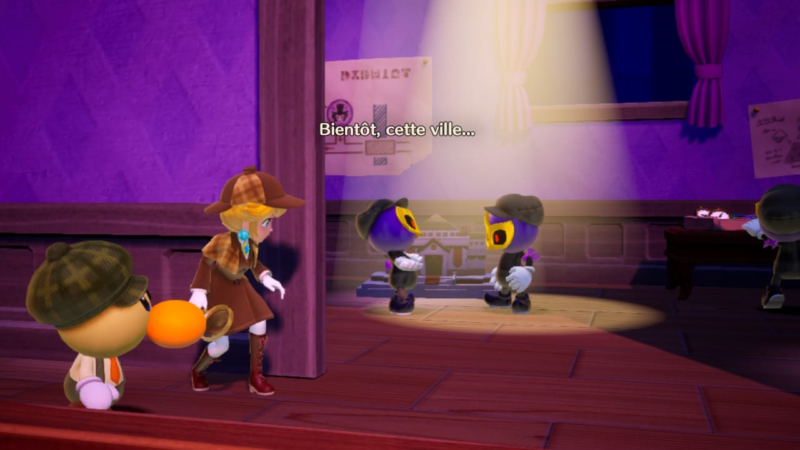
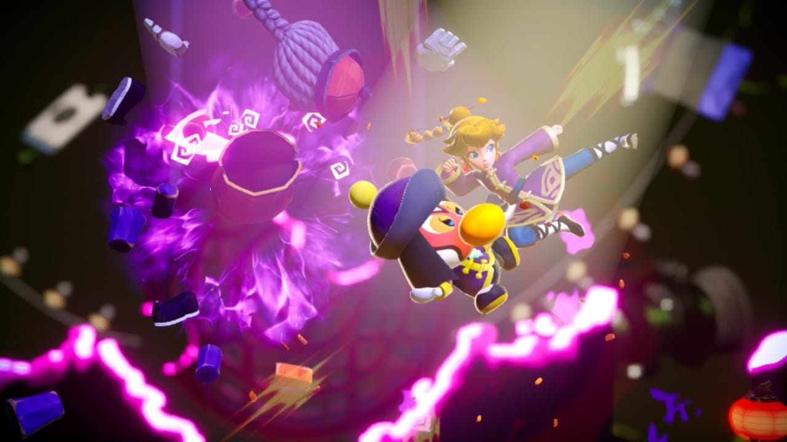

"Princess Peach: Showtime!" est un jeu Nintendo sorti le 22 mars 2024 sur Switch.
Ce jeu marque une nouvelle ère pour la princesse, car sa dernière apparition dans un jeu vidéo entièrement consacré à elle remonte à 2005 avec "Super Princess Peach".
Cela faisait donc près de 20 ans qu'un jeu dédié à la princesse Peach n'était pas sorti.
La princesse Peach est invitée au Théâtre Sparkle pour assister à un spectacle.
Une fois arrivée, le théâtre est attaqué par les griffes du méchant Grape.
Aidée par Stella, la gardienne du théâtre, elles décident de sauver l'établissement.
Ce jeu brille par son originalité et possède une bande-son de qualité, à l'image de l'ensemble du jeu.
Il propose également une série de transformations, au total 12, chacune offrant un gameplay unique.
Ma préférée est Kung Fu Peach, en raison de son gameplay qui rappelle celui de Street Fighter.
Une fois le jeu terminé, plusieurs bonus sont disponibles, tels que la recherche de trois apprentis de l'Éteinceliste Ninja dans chaque niveau,
ainsi que la possibilité de refaire les combats contre les boss, entre autres.
Voici quelque images du jeu



